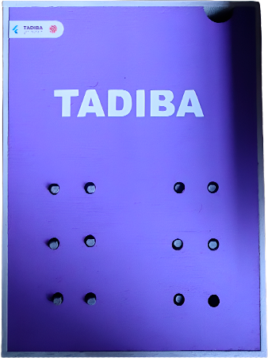
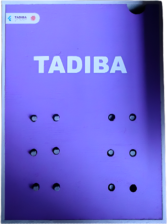
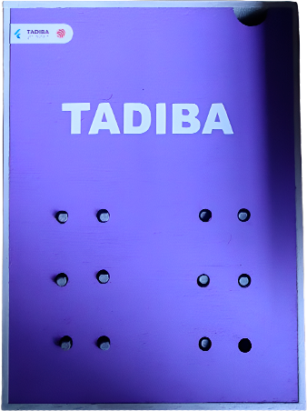

CONÓCEME
 

Tadiba es un tablero físico diseñado para que puedas sentir el relieve de los puntos del sistema Braille. Es una herramienta inclusiva que facilita el aprendizaje y la interacción con el sistema Braille.

Tadiba es un tablero físico diseñado para que puedas sentir el relieve de los puntos del sistema Braille. Es una herramienta inclusiva que facilita el aprendizaje y la interacción con el sistema Braille.
Asistab es una aplicación móvil con inteligencia artificial diseñada para ser la guia en el aprendizaje. Con Asistab, puedes interactuar con Tadiba , Asistab es indispensable para Tadiba .
DESCARGAR PARA ANDROIDTadiba y asistab han estado en constante interacción con usuarios, quienes han compartido sus experiencias y opiniones sobre el uso de la aplicación ,con la finalidad de realizar mejoras constantes.
Autor 1
Moisés Gómez
Autor 2
Ana Stephany Olivo
Autor 3
Ivan de Leon
Autor 4
Juan Alexis Spota
Somos un grupo de jóvenes de Oaxaca detrás de Tadiba y Asistab, proyecto para hacer el aprendizaje del Braille más accesible, práctico e inclusivo. Creemos en la tecnología que cambia vidas.